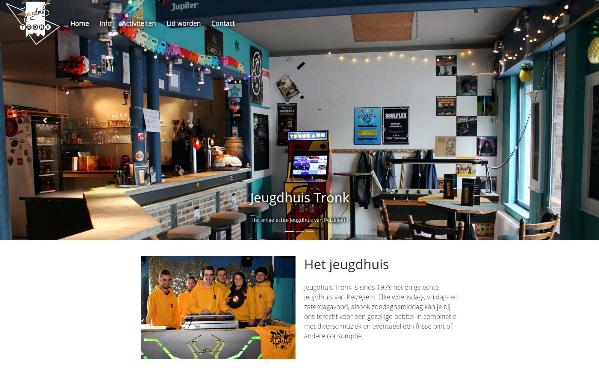
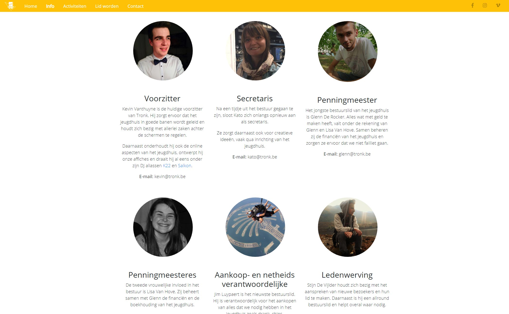

_Jeugdhuis Tronk Website
Oct 2018
As a board member of Jeugdhuis Tronk, one of my responsibilities is the online aspect of the youth house. Aside from our social media, our website is also part of this. In 2018 I decided the website could use a thorough make-over, since the old one dated from around 2010. I used HTML, CSS, Bootstrap and some simple JavaScript libraries for this project.
Take a look at the result on the Jeugdhuis Tronk website.

